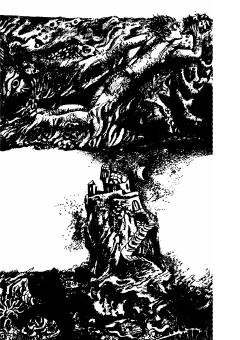

AOSuv ostida yashovchi sirli odam haqida ilmiy-fantastik roman.
Bu kitob Aleksandr Belyaevning mashhur ilmiy-fantastik romani bo'lib, o'zbek tiliga Nizom Komilов tomonidan ruscha asliyatdan tarjima qilingan. Roman suv ostida yashovchi odam haqida hayajonli voqealarni tasvirlaydi. Kitob Toshkentda G'afur G'ulom nomidagi Adabiyot va san'at nashriyotida 1989-yilda chop etilgan.